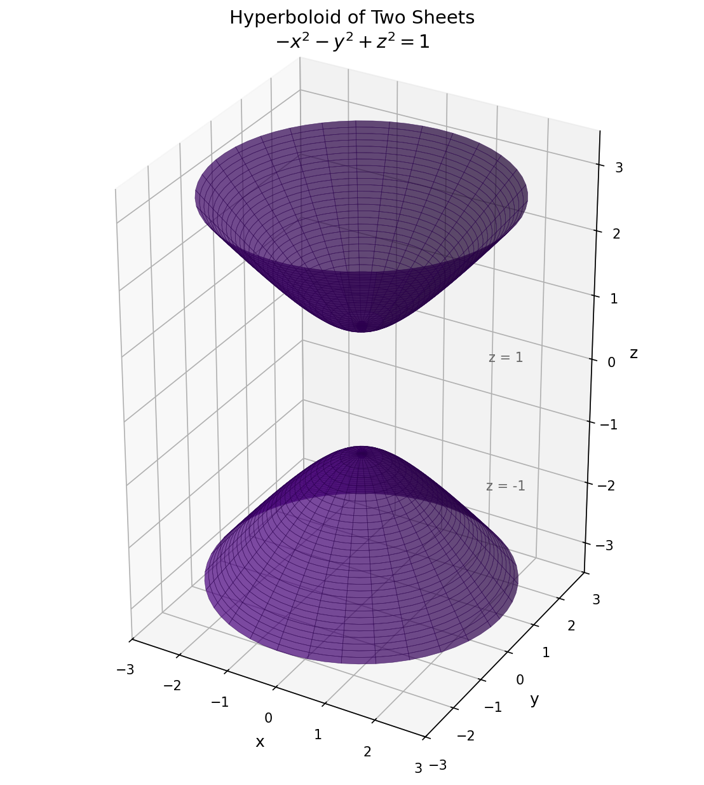

For the surface \(-x^2 - y^2 + z^2 = 1\), find traces in all three dimensions. Make a small sketch of a typical trace in each dimension. Describe the surface in words. Now sketch the surface (this should be feasible if you "assemble" the traces). Name the surface.
Solution:
Trace 1: Horizontal slices (\(z = k\))
Substituting \(z = k\):
\[-x^2 - y^2 + k^2 = 1 \implies x^2 + y^2 = k^2 - 1\]
This is a circle of radius \(\sqrt{k^2 - 1}\) centered at \((0, 0)\).
Condition: Need \(k^2 - 1 \geq 0\), so \(|k| \geq 1\).
No trace exists for \(-1 < z < 1\).
Trace 2: Vertical slices (\(x = k\))
Substituting \(x = k\):
\[-k^2 - y^2 + z^2 = 1 \implies z^2 - y^2 = 1 + k^2\]
This is a hyperbola opening in the \(\pm z\) directions with \(z\)-intercepts at \(z = \pm\sqrt{1 + k^2}\).
Trace 3: Vertical slices (\(y = k\))
Substituting \(y = k\):
\[-x^2 - k^2 + z^2 = 1 \implies z^2 - x^2 = 1 + k^2\]
This is also a hyperbola opening in the \(\pm z\) directions with \(z\)-intercepts at \(z = \pm\sqrt{1 + k^2}\).
z = k (circle)
x = k (hyperbola)
y = k (hyperbola)
Description of the surface:
- Horizontal slices are circles when \(|z| \geq 1\)
- There is no surface when \(|z| < 1\) (a gap between the two pieces)
- Vertical slices are hyperbolas opening in the \(\pm z\) directions

1) are circles centered on the z-axis. Vertical cross-sections through the z-axis are hyperbolas opening in the ±z directions." width="400" style="max-width: 100%; height: auto;">Name of the surface:
Hyperboloid of Two Sheets